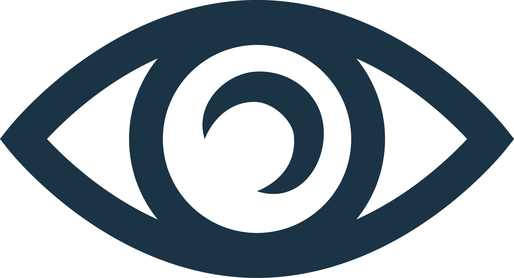

Barcelona, Spain
Сайт для всех
фанатов футбольного клуба "Барселона"Barcelona, Spain
Сайт для всех
фанатов футбольного клуба "Барселона"
Barcelona, Spain
Сайт для всех
фанатов футбольного клуба "Барселона"Barcelona, Spain
Сайт для всех
фанатов футбольного клуба "Барселона"Возраст: 43 года
Гражданстко: Испания
Хавье́р Эрна́ндес Кре́ус, более известный как Ха́ви — испанский футболист, выступавший на позиции полузащитника. Главный тренер испанского клуба «Барселона». Считался одним из лучших полузащитников Испании всех времён, он славился своим пасом, видением поля, удержанием мяча и позиционированием.
Игровой номер: 1
Возраст: 31 год
Гражданстко: Германия
Марк-Андре́ тер Ште́ген — немецкий футболист, вратарь испанского клуба «Барселона» и сборной Германии.
Игровой номер: 13
Возраст: 24 года
Гражданстко: Испания
Игна́сио Пе́нья Сото́ррес — испанский футболист, вратарь клуба «Барселона».

Игровой номер: 4
Возраст: 24 года
Гражданстко: Уругвай
Ро́нальд Федери́ко Арау́хо да Си́льва — уругвайский футболист, защитник испанского клуба «Барселона» и сборной Уругвая.

Игровой номер: 15
Возраст: 27 лет
Гражданстко: Дания
Андреас Кристенсен — датский футболист, защитник «Барселоны» и сборной Дании. Полуфиналист чемпионата Европы 2020 года.

Игровой номер: 17
Возраст: 32 года
Гражданстко: Испания
Ма́ркос Ало́нсо Мендо́са — испанский футболист, левый защитник клуба «Барселона» и сборной Испании. Профессиональный футболист в третьем поколении: внук испанского футболиста Маркитоса и сын экс-игрока «Атлетико» и «Барселоны» Маркоса Алонсо Пенья. Все трое выступали в составе сборной. Воспитанник академии мадридского «Реала», в системе которой находился 1999 по 2008 год.

Игровой номер: 18
Возраст: 34 года
Гражданстко: Испания
Жо́рди А́льба Ра́мос — испанский футболист, левый защитник клуба «Барселона» и сборной Испании. Воспитанник академий «Барселоны» и «Валенсии», свои первые шаги в профессиональном футболе делал в составе валенсийской команды. В 2009 году перешёл в клуб «Химнастик», провёл здесь 37 матчей и забил 4 гола. В 2012 году Альба вернулся в каталонскую «Барселону» за 14 млн евро.

Игровой номер: 23
Возраст: 24 года
Гражданстко: Франция
Жюль Оливье́ Кунде́ — французский футболист, защитник испанского футбольного клуба «Барселона» и сборной Франции.

Игровой номер: 28
Возраст: 19 лет
Гражданстко: Испания
Алеха́ндро Ба́льде Марти́нес — испанский футболист, защитник клуба «Барселона» и сборной Испании.

Капитан команды
Игровой номер: 5
Возраст: 34 года
Гражданстко: Испания
Се́рхио Буске́тс-и-Бу́ргос — испанский футболист, опорный полузащитник, капитан футбольного клуба «Барселона». Воспитанник футбольной академии «Барселоны», в составе первой команды выступает с 2008 года.

Игровой номер: 6
Возраст: 18 лет
Гражданстко: Испания
Па́бло Марти́н Па́эс Гави́ра, более известный как Га́ви (исп. Gavi) — испанский футболист, полузащитник клуба «Барселона» и сборной Испании. Считается одним из самых талантливых игроков своего поколения. Участник чемпионата мира 2022 года.

Игровой номер: 8
Возраст: 20 лет
Гражданстко: Испания
Пе́дро Гонса́лес Ло́пес, более известный как Пе́дри (исп. Pedri) — испанский футболист, атакующий полузащитник клуба «Барселона» и сборной Испании. Бронзовый призёр чемпионата Европы 2020 года, а также лучший молодой игрок этого турнира. Серебряный призёр Олимпийских игр 2020 года в Токио. В возрасте 18 лет вошёл в список 30 футболистов, номинированных на Золотой мяч 2021 года.

Игровой номер: 20
Возраст: 31 год
Гражданстко: Испания
Се́рхи Робе́рто Карнисер — испанский футболист, правый полузащитник клуба «Барселона» и национальной сборной Испании. Серхи пришёл в академию «сине-гранатовых» из детской команды «Химнастика», здесь он провёл три сезона, после чего попал во вторую команду «Барселоны». В течение четырёх сезонов за резерв провёл около 100 матчей, попутно появляясь в составе первой команды.

Игровой номер: 21
Возраст: 26 лет
Гражданстко: Нидерланды
Фре́нки де Йонг — нидерландский футболист, полузащитник «Барселоны» и сборной Нидерландов. Де Йонг является воспитанником «Виллем II», в составе клуба дебютировал в Эредивизи. В августе 2015 года перебрался в «Аякс» за один евро. В первом же сезоне в составе амстердамцев был признан главным талантом Эредивизи 2016/17.

Игровой номер: 22
Возраст: 26 лет
Гражданстко: Бразилря
Рафинья Диас Беллоли более известный, как Рафи́нья (порт.-браз. Raphinha) — бразильский футболист, вингер испанского клуба «Барселона» и сборной Бразилии.

Игровой номер: 7
Возраст: 26 лет
Гражданстко: Франция
Масу́р Усма́н Дембеле́ — французский футболист, нападающий «Барселоны» и национальной сборной Франции. Чемпион мира 2018 года. Являлся одним из самых дорогих французских футболистов, летом 2017 года он перешёл в «Барселону» за 105 млн евро.

Игровой номер: 9
Возраст: 34 года
Гражданстко: Польша
Ро́берт Левандо́вский — польский футболист, нападающий испанского клуба «Барселона» и капитан национальной сборной Польши. Считается одним из лучших нападающих в мире. Кавалер Командорского креста ордена Возрождения Польши. Левандовский начал свою карьеру в польских клубах, в составе «Леха» он стал победителем Кубка и Суперкубка Польши, а также чемпионом страны.

Игровой номер: 10
Возраст: 20 лет
Гражданстко: Испания
Анссумане́ Фати́ Вие́йра, более известный как Ансу́ Фати́ (порт. и исп. Ansu Fati) — испанский и бисаусский футболист, вингер клуба «Барселона» и сборной Испании.

Игровой номер: 11
Возраст: 23 года
Гражданстко: Испания
Ферра́н То́ррес Гарси́а — испанский футболист, вингер клуба «Барселона» и сборной Испании.
 25 034
22.05.2023

В Испании рекордом является показать в 18 пропущенных мячей за сезон. Такие цифры были у Пако Льяно из Депортиво в сезоне 93/94 и у Яна Облака из Атлетико в сезоне 15/16.
В Европе же лучший показатель был у Челси с Чехом, которые в сезоне 04/05 пропустили всего 15 голов.
Правда я проверил статистику и там вот какой расклад: Чех сыграл всего в 35 турах, а 3 последних тура вместо него был другой голкипер, который поймал 2 гола и в итоге Челси за весь сезон пропустил 15 голов. У самого Чеха 35 туров и 13 пропущенных. У Тер Штегена сейчас 34 тура и 13 пропущенных.
15 732
22.05.2023

Клуб серьезно рассматривает этот вариант, хотя они знают о трудностях, связанных с операцией: «Это очень сложно, но не невозможно».
Цена операции может составить около 80 миллионов евро, хотя «Барса» надеется включить в операцию игрока, чтобы удешевить трансфер. «Баварии» могут быть предложены такие игроки, как Нико, Дест, Ферран Торрес и Ансу Фати.
10 703
21.05.2023

Они также могут дать больше минут Пабло Торре, Эрику Гарсии и Кессье, поскольку команда уже выиграла Лигу.
Это будет вызов для Пеньи, потому что ему придется внести свой вклад в исторический рекорд. Если «Барса» не пропустит более 2 голов, то станет лучшей командой в истории европейского футбола в плане обороны, превзойдя «Челси» 2004/05, который пропустил 15 голов (у «Барсы» сейчас 13).
Хави Эрнандес
Марк-Андре тер Штеген
Иньяки Пенья
Рональд Араухо
Андреас Кристенсен

Маркос Алонсо
Жорди Альба
Жюль Кунде
Алехандро Бальде
Серхио Бускетс
Пабло Гави
Педри
Серхи Роберто

Френки де Йонг
Рафинья Беллоли
Усман Дембеле
Роберт Левандовски
Ансу Фати

Ферран Торрес